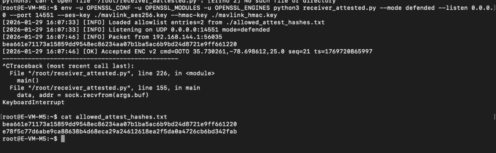
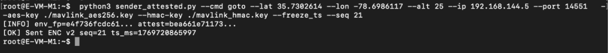
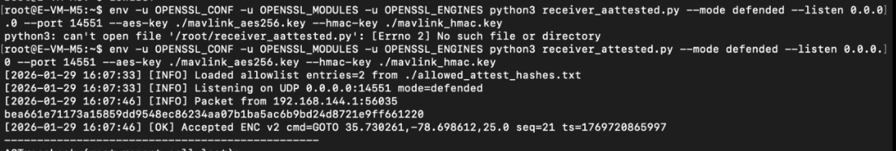
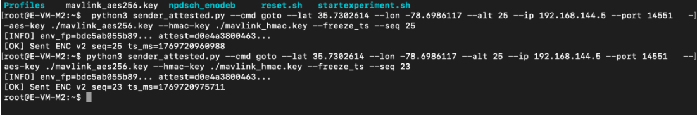
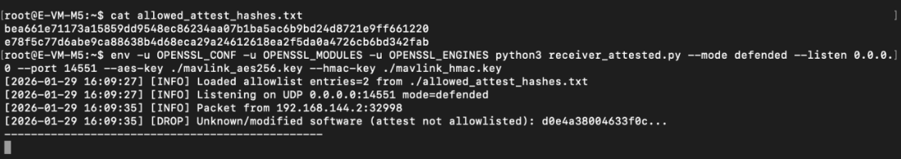

In this chapter, you will implement and evaluate a software-based attestation mechanism that verifies the identity of ground control stations sending MAVLink commands to the drone. This experiment addresses a critical limitation of encryption and replay protection: both defenses fail if an adversary obtains valid cryptographic keys.
Encrypted MAVLink commands with replay protection can still be exploited by a man-in-the-middle attacker who has access to the shared AES and HMAC keys. Software-based attestation adds an additional security layer by verifying that commands originate from authorized systems, not just authorized keys.
This chapter demonstrates system behavior in two modes:
By completing this chapter, you will be able to reproduce and analyze attestation-based defenses in the AERPAW environment.
Before starting this experiment, ensure that:
This chapter assumes that encrypted command transmission and anti-replay protection have already been implemented and tested.
This experiment uses the following components:
All MAVLink communication uses UDP port 14551.
Software-based attestation works by computing a cryptographic hash of the sender's system state. This hash serves as a unique identifier or "fingerprint" of the system. The drone maintains an allowlist of trusted hashes and only accepts commands from systems whose hashes match entries in the allowlist.
Key Components:
This approach provides defense-in-depth: even if an attacker steals the encryption keys, they cannot send commands without having the exact system configuration of an authorized ground station.
Ensure that the following files are present on both the base station and the drone:
sender_attested.pyreceiver_attested.pymavlink_aes256.keymavlink_hmac.keyallowed_attest_hashes.txt (on drone only)In this scenario, the drone does not enforce attestation checks. This demonstrates baseline behavior before adding attestation protection.
On Base Station 1 (legitimate GCS), generate the attestation hash:
cd /root
python3 sender_attested.py \
--cmd goto \
--lat 35.7302614 \
--lon -78.6986117 \
--alt 25 \
--ip 192.168.144.5 \
--port 14551 \
--aes-key ./mavlink_aes256.key \
--hmac-key ./mavlink_hmac.key \
--freeze_ts --seq 1
The sender will output its attestation hash. Note this value - you will need it for the allowlist.
Example output:
[INFO] env_fpm=kf736fcddc61... attest=bea661e71173a51b859d695d6ec8c6234aa8971ba5ac6d9bd24d87140f661228
On the drone node (192.168.144.5), start the receiver without attestation enforcement:
cd /root
env -u OPENSSL_CONF -u OPENSSL_MODULES -u OPENSSL_ENGINES python3 receiver_attested.py \
--mode defended \
--listen 0.0.0.0 \
--port 14551 \
--aes-key ./mavlink_aes256.key \
--hmac-key ./mavlink_hmac.key
Note that the --allowlist parameter is not specified, so the receiver will accept commands from any source with valid encryption keys.
From Base Station 1 (192.168.144.1), send a command:
python3 sender_attested.py \
--cmd goto \
--lat 35.7302614 \
--lon -78.6986117 \
--alt 25 \
--ip 192.168.144.5 \
--port 14551 \
--aes-key ./mavlink_aes256.key \
--hmac-key ./mavlink_hmac.key \
--freeze_ts --seq 21
The command is sent with the system's attestation hash included in the message.
From Base Station 2 (192.168.144.2 - adversary node), send the same command:
python3 sender_attested.py \
--cmd goto \
--lat 35.7302614 \
--lon -78.6986117 \
--alt 25 \
--ip 192.168.144.5 \
--port 14551 \
--aes-key ./mavlink_aes256.key \
--hmac-key ./mavlink_hmac.key \
--freeze_ts --seq 23
On the drone receiver terminal, you will see both commands being accepted.
Key Observation: Without attestation enforcement, the drone accepts commands from both the legitimate base station and the adversary node, because both have valid encryption keys.
Now we will enable attestation enforcement to prevent unauthorized nodes from sending commands.
On the drone node, create the allowlist file with only the legitimate base station's hash:
cd /root
cat > allowed_attest_hashes.txt << EOF
bea661e71173a51b859d695d6ec8c6234aa8971ba5ac6d9bd24d87140f661228
e78f5e77d6aa9c2a886a8bbd668e0a99e246126d16e2f5dd8a647260e5bd8342f4b0
EOF
Replace the hash values with the actual attestation hashes from your legitimate base stations. Each line contains one authorized system hash.
Verify the file was created correctly:
cat allowed_attest_hashes.txt
Stop the previous receiver using Ctrl+C.
Restart the receiver with attestation enforcement enabled:
env -u OPENSSL_CONF -u OPENSSL_MODULES -u OPENSSL_ENGINES python3 receiver_attested.py \
--mode defended \
--listen 0.0.0.0 \
--port 14551 \
--aes-key ./mavlink_aes256.key \
--hmac-key ./mavlink_hmac.key \
--allowlist ./allowed_attest_hashes.txt

The receiver now loads the allowlist and will only accept commands from systems whose attestation hashes are in the file.
From Base Station 1 (192.168.144.1), send a command:
python3 sender_attested.py \
--cmd goto \
--lat 35.7302614 \
--lon -78.6986117 \
--alt 25 \
--ip 192.168.144.5 \
--port 14551 \
--aes-key ./mavlink_aes256.key \
--hmac-key ./mavlink_hmac.key \
--freeze_ts --seq 21


Expected Result: The drone accepts the command because Base Station 1's attestation hash is in the allowlist.
On the receiver side, you will see:
[2026-01-29 16:07:41] [OK] Accepted ENC command: GOTO 35.7302614,-78.6986117,25.0 seq=21 ts=1769728865997
From Base Station 2 (192.168.144.2 - adversary), send a command:
python3 sender_attested.py \
--cmd goto \
--lat 35.7302614 \
--lon -78.6986117 \
--alt 25 \
--ip 192.168.144.5 \
--port 14551 \
--aes-key ./mavlink_aes256.key \
--hmac-key ./mavlink_hmac.key \
--freeze_ts --seq 23

Expected Result: The drone rejects the command because Base Station 2's attestation hash is not in the allowlist.
On the receiver side, you will see:
[2026-01-29 16:09:36] [DROP] Unknown/modified software (attest not allowlisted): d0e4a388b463f0c...

The adversary's command is dropped despite having valid encryption keys and proper replay protection, because the system attestation fails.
The sender_attested.py script computes the attestation hash by collecting system information:
def compute_attest():
"""Compute system attestation hash from hostname, IPs, and system files"""
import hashlib
import socket
import subprocess
# Collect system identifiers
hostname = socket.gethostname()
# Get network interfaces
try:
result = subprocess.check_output(['hostname', '-I'])
ips = result.decode().strip()
except:
ips = "unknown"
# Hash system state
h = hashlib.sha256()
h.update(hostname.encode())
h.update(ips.encode())
return h.hexdigest()
This creates a unique fingerprint based on the system's configuration. Any change to the hostname or network configuration will result in a different hash.
Commands sent with attestation include the hash in the message format:
ENC|v1|<nonce>|<ciphertext>|<hmac>|<attestation_hash>
The attestation hash is appended to the encrypted message, allowing the receiver to verify the sender's identity before processing the command.
The receiver_attested.py script performs the following checks:
Only if all three checks pass is the command executed.
Receiver parameters:
--mode: no_defense (accept all) or defended (enforce checks)--allowlist: Path to file containing authorized attestation hashes--replay_window_ms: Acceptable timestamp deviation (default: 5000ms)--nonce_cache_size: Number of nonces to remember (default: 1000)Sender parameters:
--freeze_ts: Use a fixed timestamp (for testing replay scenarios)--seq: Sequence number for the commandCompare the three security layers:
| Security Layer | Protects Against | Limitation |
|---|---|---|
| Encryption Only | Eavesdropping | Vulnerable to replay and MITM with stolen keys |
| Encryption + Anti-Replay | Eavesdropping + Replay | Vulnerable to MITM with stolen keys |
| Encryption + Anti-Replay + Attestation | Eavesdropping + Replay + Unauthorized Systems | Requires secure key distribution and system integrity |
To authorize a new base station:
allowed_attest_hashes.txt on the droneIf a base station is compromised:
For multi-drone scenarios:
Commands rejected from legitimate base station:
allowed_attest_hashes.txt matches the sender's current hashReceiver not loading allowlist:
chmod 644 allowed_attest_hashes.txt)--allowlist parameter is specifiedAttestation hash changes unexpectedly:
After completing the experiment:
As a result of completing this chapter, you observed how software-based attestation adds an additional layer of security beyond encryption and replay protection. You were able to see that when attestation enforcement is disabled, any system with valid encryption keys can send commands to the drone. When attestation is enabled, only systems whose attestation hashes are in the allowlist can send commands, preventing unauthorized nodes from controlling the drone even if they have obtained the cryptographic keys.
Through this experiment, you gained practical insight into defense-in-depth security strategies, where multiple independent security mechanisms work together to protect critical systems. You learned that secure UAV command and control requires not only protecting the content of messages (encryption) and their freshness (anti-replay), but also verifying the identity and integrity of the systems sending those messages (attestation).
This layered approach is essential for mission-critical systems where the consequences of unauthorized access can be severe. By implementing attestation-based defenses, you have added a crucial capability that limits the attack surface and provides resilience even when other security layers are compromised.